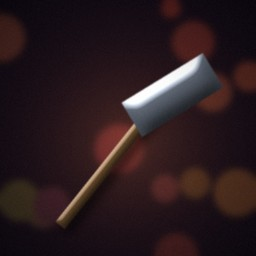
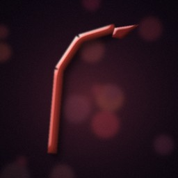

🌿 Foraging
Gather wild herbs and, with practice, rare moonblooms from rooms with plant life.
Command: forage · Details
⛏️ Mining
Dig iron ore from ore veins. Higher skill finds silver, then mithril.
Command: mine · Details
🎣 Fishing
Catch river trout, and with practice the occasional pearl, in rooms with water.
Command: fish · Details

🔨 Smithing
Forge tools and every tier of weapon and armor from ore, silver, mithril and dragon scale. Needs a forge (Brann's Smithy, the mines, the Ember temple).
Command: smith · Details
🧪 Brewing
Brew stims, trauma kits and mana cells from herbs, blooms, silver and pearls.
Command: brew · Details
🍲 Cooking
Cook meals that heal and give a timed buff. Needs a hearth: an inn, camp, forge or any safe room.
Command: cook · Details

♻️ Salvaging
Break unwanted weapons and armor down into ore, silver, mithril and scale. Higher skill recovers more.
Command: salvage · Details
🌿 Foraging
Gather wild herbs and, with practice, rare moonblooms from rooms with plant life.
Works in rooms with plants worth foraging (nodes refill every minute). Found in: Whisperwood (10), Redrock Trail (4), Sunken Marsh (5), Sunscorch Dunes (5), Thornwild Court (3), Starship Aurora (1), The Drowned Reach (1), Modern District (1), The Primeval Rift (2).
| Finds | Needs skill level | Chance |
|---|---|---|
| wild herb | 1 | common |
| moonbloom | 8 | rare, improves with skill and tool |
⛏️ Mining
Dig iron ore from ore veins. Higher skill finds silver, then mithril.
Works in rooms with ore vein (nodes refill every minute). Found in: Ashfall Junction (1), Whisperwood (1), Barrow Crypts (7), Silverado Mines (7), Frostpeak Station (5), Ember Wastes (4), Shattered Citadel (4), Tombstone Gulch (2), Starship Aurora (1), Brimstone Rail Yard (2), Modern District (1), The Primeval Rift (2).
| Finds | Needs skill level | Chance |
|---|---|---|
| iron ore | 1 | common |
| silver nugget | 10 | rare, improves with skill and tool |
| mithril ore | 25 | rare, improves with skill and tool |
🎣 Fishing
Catch river trout, and with practice the occasional pearl, in rooms with water.
Works in rooms with fishing spot (nodes refill every minute). Found in: Whisperwood (2), Sunken Marsh (4), Sunscorch Dunes (1), Thornwild Court (1), The Drowned Reach (2).
| Finds | Needs skill level | Chance |
|---|---|---|
| river trout | 1 | common |
| river pearl | 12 | rare, improves with skill and tool |
🔨 Smithing
Forge tools and every tier of weapon and armor from ore, silver, mithril and dragon scale. Needs a forge (Brann's Smithy, the mines, the Ember temple).
| Skill | Recipe | Materials | Makes |
|---|---|---|---|
| 1 | scrap_knife | 1 iron ore | scrap knife |
| 3 | miners_pick | 2 iron ore | miner's pick |
| 4 | bike_helmet_plate | 2 iron ore | iron helm |
| 6 | iron_buckler | 3 iron ore | iron buckler |
| 8 | iron_sword | 6 iron ore | scrap blade |
| 9 | iron_boots | 4 iron ore | scrap boots |
| 9 | iron_helm | 4 iron ore | scrap helmet |
| 10 | iron_shield | 6 iron ore | scrap riot shield |
| 11 | iron_mail | 10 iron ore | scrap vest |
| 16 | steel_sword | 6 iron ore, 6 silver nugget | carbon blade |
| 17 | steel_boots | 4 iron ore, 4 silver nugget | carbon boots |
| 17 | steel_helm | 4 iron ore, 4 silver nugget | carbon helmet |
| 18 | steel_shield | 6 iron ore, 6 silver nugget | carbon riot shield |
| 19 | steel_mail | 10 iron ore, 10 silver nugget | carbon vest |
| 26 | mithril_sword | 6 mithril ore, 6 iron ore | nano-weave blade |
| 27 | mithril_boots | 4 mithril ore, 4 iron ore | nano-weave boots |
| 27 | mithril_helm | 4 mithril ore, 4 iron ore | nano-weave helmet |
| 28 | mithril_shield | 6 mithril ore, 6 iron ore | nano-weave riot shield |
| 29 | mithril_mail | 10 mithril ore, 10 iron ore | nano-weave vest |
| 34 | runed_sword | 6 mithril ore, 6 silver nugget | runed blade |
| 35 | runed_boots | 4 mithril ore, 4 silver nugget | runed boots |
| 35 | runed_helm | 4 mithril ore, 4 silver nugget | runed helmet |
| 36 | runed_shield | 6 mithril ore, 6 silver nugget | runed riot shield |
| 37 | runed_mail | 10 mithril ore, 10 silver nugget | runed vest |
| 42 | adamant_sword | 12 mithril ore, 6 silver nugget | smartsteel blade |
| 43 | adamant_boots | 8 mithril ore, 4 silver nugget | smartsteel boots |
| 43 | adamant_helm | 8 mithril ore, 4 silver nugget | smartsteel helmet |
| 44 | adamant_shield | 12 mithril ore, 6 silver nugget | smartsteel riot shield |
| 45 | adamant_mail | 20 mithril ore, 10 silver nugget | smartsteel vest |
| 48 | dragon_sword | 6 dragon scale, 6 mithril ore | dragonscale blade |
| 49 | dragon_boots | 4 dragon scale, 4 mithril ore | dragonscale boots |
| 49 | dragon_helm | 4 dragon scale, 4 mithril ore | dragonscale helmet |
| 50 | dragon_shield | 6 dragon scale, 6 mithril ore | dragonscale riot shield |
| 51 | dragon_mail | 10 dragon scale, 10 mithril ore | dragonscale vest |
🧪 Brewing
Brew stims, trauma kits and mana cells from herbs, blooms, silver and pearls.
| Skill | Recipe | Materials | Makes |
|---|---|---|---|
| 1 | red_stim | 2 wild herb | red stim |
| 2 | medkit | 3 wild herb | herbal medkit |
| 4 | blue_cell | 1 wild herb, 1 iron ore | blue cell |
| 6 | tonic | 1 moonbloom, 1 wild herb | moonbloom tonic |
| 12 | strong_stim | 4 wild herb, 2 moonbloom | strong stim |
| 16 | azure_cell | 2 iron ore, 1 moonbloom, 2 wild herb | azure cell |
| 22 | military_stim | 6 wild herb, 4 moonbloom | military stim |
| 28 | cobalt_cell | 2 silver nugget, 3 moonbloom | cobalt cell |
| 34 | trauma_kit | 6 moonbloom, 2 river pearl | trauma kit |
| 40 | sapphire_cell | 4 silver nugget, 3 river pearl, 4 moonbloom | sapphire cell |
| 44 | revive_kit | 10 moonbloom, 4 river pearl, 2 mithril ore | revive kit |
🍲 Cooking
Cook meals that heal and give a timed buff. Needs a hearth: an inn, camp, forge or any safe room.
| Skill | Recipe | Materials | Makes |
|---|---|---|---|
| 1 | grilled_trout | 1 river trout | grilled trout |
| 5 | noodle_bowl | 1 river trout, 1 wild herb | noodle bowl |
| 12 | fish_stew | 2 river trout, 2 wild herb | fish stew |
| 22 | pearl_chowder | 3 river trout, 1 river pearl | pearl chowder |
| 32 | hunters_feast | 4 river trout, 4 wild herb, 2 moonbloom | hunter's feast |
| 44 | frontier_banquet | 6 river trout, 4 moonbloom, 2 river pearl | frontier banquet |
♻️ Salvaging
Break unwanted weapons and armor down into ore, silver, mithril and scale. Higher skill recovers more.
Type salvage <item> for any unworn weapon or armor in your pack or bag. Better gear gives better materials.
Tips
- Foraging, mining and fishing need a room with the right resource node. Look at the room: "Resources here: herb x3".
- Crafting uses materials in your bag as well as your pack.
- Smithing needs a forge (Brann's Smithy, the abandoned forge in the mines, the Ember Forge-Temple). Cooking needs a hearth: an inn, camp, forge or any safe room.
- All materials sell at every shop. The Salvage Exchange in Ashfall pays 60%.